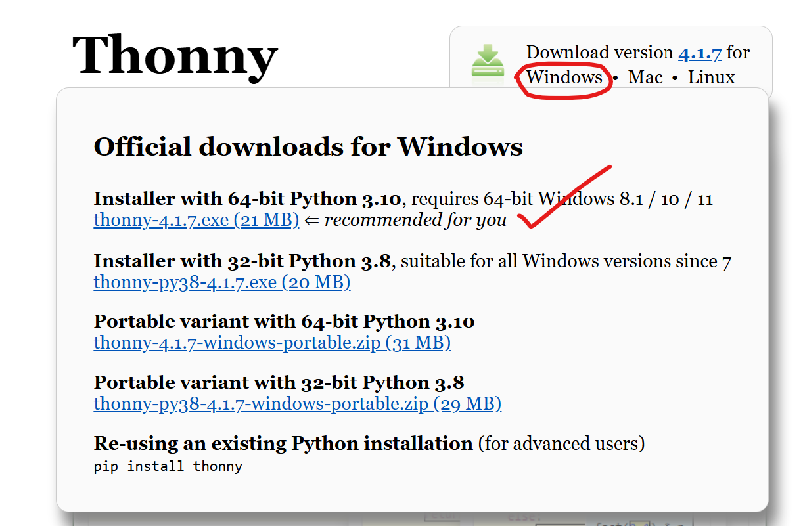
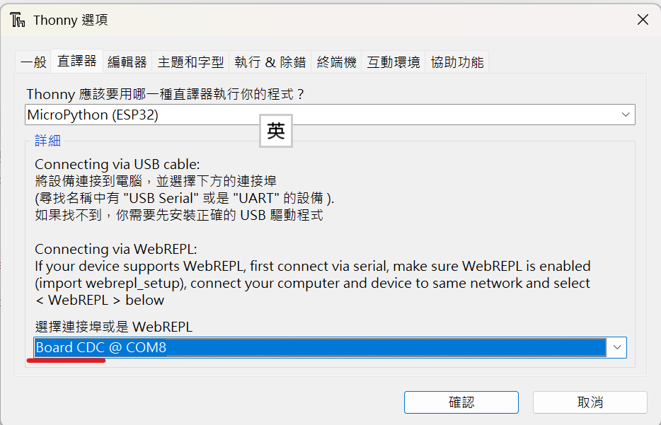
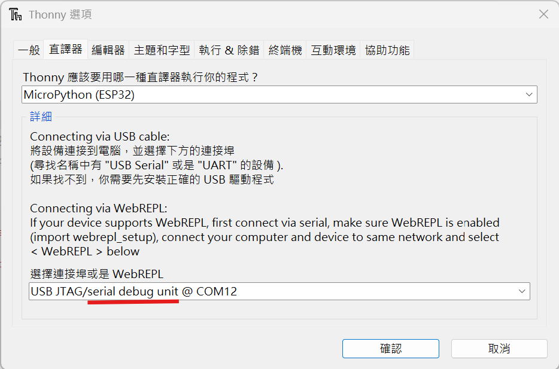

在開始之前，先來認識這塊 ESP32-S3 開發板上的兩個重要按鈕。
面向板子正面（USB 接口朝上）時：

Thonny 是一款非常適合初學者的 MicroPython 開發環境。
請前往官方網站下載並安裝： https://thonny.org
使用 USB 傳輸線將 ESP32-S3 開發板連接到電腦。
開啟 Thonny->執行->設定直譯器。
Thonny應該要用哪一種直譯器執行你的程式？
選擇MicroPython (ESP32)
請注意選擇連接埠或是 WebREPL這裡，假如看到連接埠是Board CDC，這不是燒錄模式。
要先切換成燒錄模式，可以按著Boot按鈕然後插上傳輸線。（有焊上排針比較不好按）。我習慣是按著Boot按鈕不放，然後按一下Reset按鈕，最後再放開Boot按鈕。按鈕按下去都會有喀一聲，別怕按壞。
Serial debug unit連接埠才是燒錄模式。
依照下圖的設定，將 MicroPython 韌體燒錄至開發板中。